第２回：「ポングゲームを作ろう」
概要
日程： 2016/7/31 (日) 9:30-11:30
課題： Scratchを使って「ポング」と言うクラシックゲームの作成
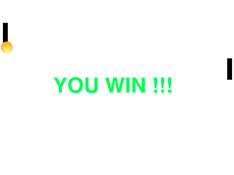
内容
1. ボールの作成
やりたいこと：ボールを作る
やり方：
- 猫のスプライトを削除する
- スプライトライブラリーからボールのスプライトを持ってくる
- 「コスチューム」タブで不要なコスチュームを削除する
- スプライトのサイズを約25x25ピクセルに調整する（縮小ボタンで）
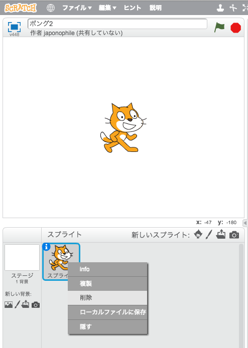
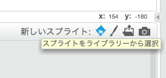
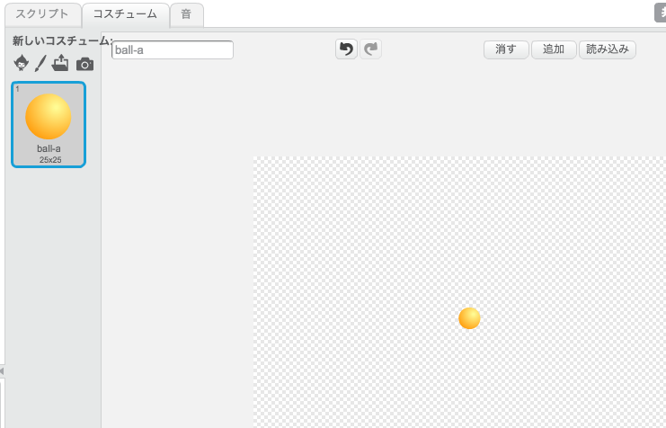
2. ボールの基本な動き
ボールの「スクリプト」タブで、ボールの動きのプログラムを作ってみよう。
やりたいこと：ボールをずっと動かし続けて、壁にぶつかったら跳ね返るようにする
やり方：
- イベントから「旗が押された時」（ゲームのスタート時点）
- 制御から「ずっと」
- 動きから「10歩動かす」
- そして「もし端に着いたら、跳ね返る」
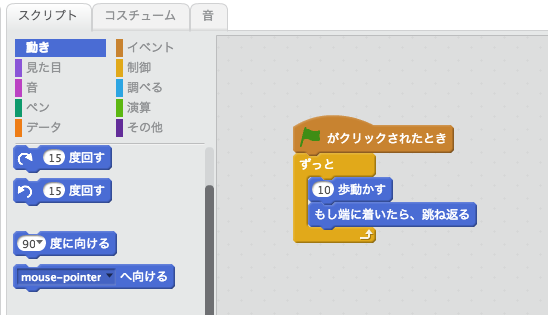
3. パドルの作成
次はパドル（ラケット）が必要です。
やりたいこと：プレイヤーのパドルを作る
やり方：
- えんぴつを選んで新しいスプライトを描く
- 「四角形」を選んで、「塗りつぶす」方を選ぶ
- 長方形を描く →パドルの出来上がり！
- スプライトの情報（info）でスプライトの名前を分かりやすくしよう（例えば：「プレイヤーのパドル」）
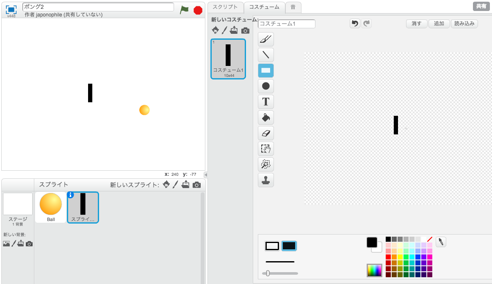
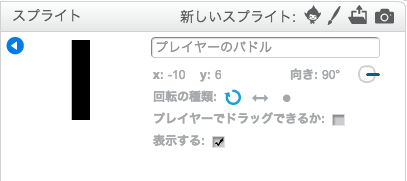
4. プレイヤーのパドルの動き
プレイヤーがパドルを動かせるようにしよう。
やりたいこと：マウスの動きに沿って、パドルを上下動かせるようにする。但し、x方向には動いて欲しくない。
やり方：
- イベントから「旗が押された時」（ゲームのスタート時点）
- 制御から「ずっと」
- 動きから「y座標を◯◯にする」
- 調べるから◯◯を「マウスのy座標」に変える
パドルを右側に置いて試してみよう。
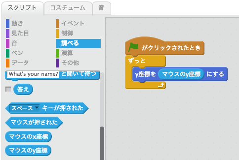
5. 相手（パソコン）のパドル作成
次に、相手（パソコン）のパドルを作成しよう。
やりたいこと：プレイヤーのパドルと同じものを作りたい。
やり方：
- プレイヤーのパドルの上に右クリックで「複製」
- スプライトの情報（info）で名前を「パソコンのパドル」に変える
パドルを右側に置いて試してみよう。
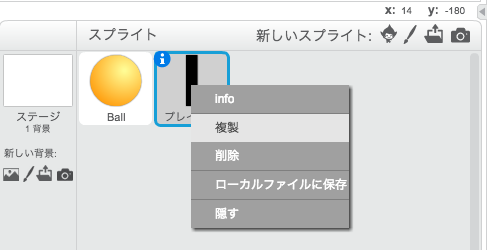
6. パソコンのパドルの動き
パソコンのパドルは今、プレイヤーのパドルと全く同じ動きをしていておかしいですね。
このゲームに勝つにはどういう風にすれば良いでしょうか。
やりたいこと：パソコンがうまくプレイできるように、パソコンのパドルをボールの位置に沿って動くようにする。
やり方：
- プレイヤーのパドルのプログラムとほぼ同じですが、y座標をマウスのy座標の替わりに、調べるから「x座標 (パソコンのパドル)」を撮ってきて「y座標 (Ball)」に変える
パソコンが上手にパドルを動かすようになった！
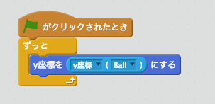
7. ボールが右に行きすぎると、負けるようにする
これまで、ボールはパドルに関係なく、壁に跳ね返っているので負けられない。
やりたいこと：ボールが右に行き過ぎたら、負けるようにする。
やり方：
ボールが右側に行き過ぎると、跳ね返るのではなく、ゲームを終了する
- ボールを選択し、「スクリプト」タブに行く
- 制御から「もし◯◯なら」を「10歩動かす」と「もし端に着いたら…」の間に入れる
※ 最初は「もし端に着いたら…」は中に入ってしまうので、「もし◯◯なら」を置いた後、
「もし端に着いたら…」を外に出すこと。
- 演算から「◯ > ◯」（より大きい）を条件として使う
- 動きから「x座標」を「>」の左側に
- 右側は「225」を（半角で）手打ちする
- 「もし…」の中側に、制御から「全てを止める」を入れる
ヒント：x座標の値を常に確認するには、「x座標」の左側のチェックを入れる：そうすると値が常に画面に表示される
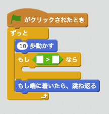
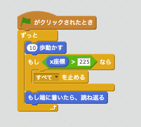
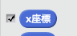
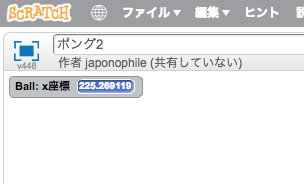
8. ボールがパドルに跳ね返るようにする
これだと、何をしても負けてしまう。
やりたいこと：ボールがパドルに跳ねるようにする。
やり方：
- ボールのスクリプトで、制御から「もし◯◯なら」を「10歩動かす」と「もし…」の間に入れる
- 調べるから「◯◯に触れた」を条件として使う
- ◯◯を「プレイヤーのパドル」にする
さて、次はどういう風に跳ね返るようにするか？
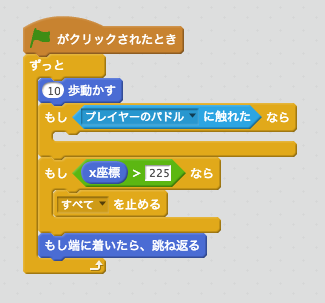
9. 実験：どういう風に跳ね返るようにするか？
やりたいこと：ボールを跳ね返させるにはどうしたらよいか調べる
やり方：
ボールのスクリプト
- 動きで「向き」の左にチェックを入れて、値を確認しよう
- 一時的に、作ったプログラム（「もし…」から下）をどかし、邪魔にならないところに置く
- ゲームをスタートし、「向き」の値を観察してみよう。壁にぶつかった時に、どのように変わるか？
観察したこと：
- 例えば、向きが135で右の壁にぶつかったら、向きは-135になる。また、向きが-45で左の壁にぶつかったら、45になる
- 向きが45で上の壁にぶつかったら、135になる。また、向きが135でしたの壁にぶつかると、45になる
結果：
- 上下の壁にぶつかった時は少し複雑なので、左右の壁にぶつかった時のケースだけを考える。
→ 向きが反転する、つまり「-」がつく、あるいは「-」が付いてれば無くなる。
→ 数学的に反転することは「かける-1」で出来ます。
では、ボールのプログラムにもどろう。
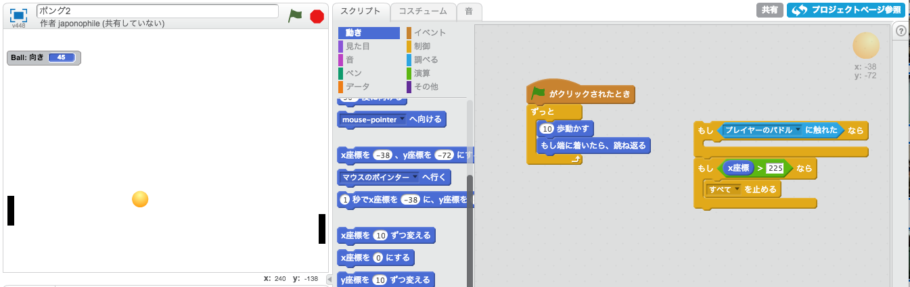
10. ボールがパドルに跳ね返るようにする
「もし…」の中側の処理を作りましょう。
やりたいこと：ボールがパドルに跳ねるようにする。
やり方：
- 一時的に横に置いたブロックを元に戻す
- 動きから「90度に向ける」を取る
- 演算から「◯ * ◯」を取る。 プログラミングの世界では、* (星)は掛け算を意味している。
- 左側は（半角で）-1を入力する
- 右側は、動きから「向き」を入れる
つまり、「(-1 * 向き)度に向ける」になる。
※ 「(0 - 向き)度に向ける」でもOK（同じ意味です）
さー、試してみよう。ゲームらしくなってきましたね。
パドルをボールのところに動かすと、跳ね返る。
パドルがないと、ゲームが終わる。
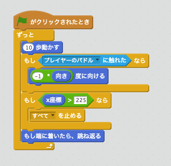
11. ボールが右に行き過ぎたら、プレイヤーの勝ち
パソコンのパドルを一度止めてみよう。
パソコンのパドルのスクリプトで「ずっと…」を一時的に横にどかす。
プレイしてみて、どうなるの？
そうです。パソコンはパドルを動かさなくても負けない。
なぜでしょう？ → ボールが跳ね返るから。
やりたいこと：ボールが左に行き過ぎるとゲームを終了する
やり方：
- ボールのスクリプトに戻って、右の壁と似たような（逆な）ロジックです
- 制御から「もし◯◯なら」を「もしx座標 > 225なら」と「もし端に着いたら…」の間に入れる
- 演算から「◯ < ◯」（より小さい）を条件として使う
- 動きから「x座標」を「<」の左側に
- 右側は「-225」を（半角で）手打ちする （マイナスを忘れずに！）
- 「もし…」の中側に、制御から「全てを止める」を入れる
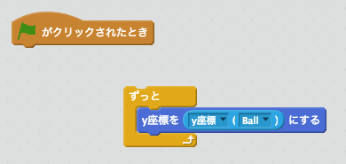
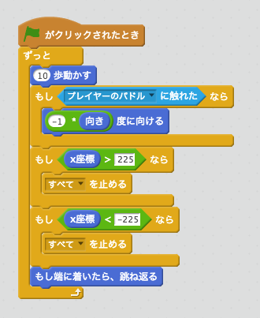
12. ボールがパソコンのパドルに跳ね返るようにする
今度は、パソコンが負けっぱなしだね。
やりたいこと：ボールがパソコンのパドルに触れたら、跳ね返るようにする
プレイヤーのパドルに触れた時と同じですね。
やり方：
- ボールのスクリプトで、制御から「もし◯◯なら」を「もしプレイヤーのパドルに触れたなら」と「もし…」の間に入れる
- 調べるから「◯◯に触れた」を条件として使う
- ◯◯を「パソコンのパドル」にする
- 動きから「90度に向ける」を「もしパソコンのパドルに触れたなら」の中側に入れる
- 演算から「◯ * ◯」を取る。
- 左側は（半角で）-1を入力する
- 右側は、動きから「向き」を入れる
これをテストしたいけど、パソコンのパドルは動かないね。
- パソコンのプログラムを元に戻してみよう。
パソコンはうますぎるね。一度ミスしてないので、勝てるかどうか確認できないね。
確認するにはパソコンのパドルのスクリプトを一時的にマウスで操作できるようにしよう。
- ずっとのブロックをどかして、「ずっと」「y座標をマウスのy座標にする」に変えてみよう
→ ちゃんと動きましたね！
- パソコンのパドルのスクリプトを元に戻そう。
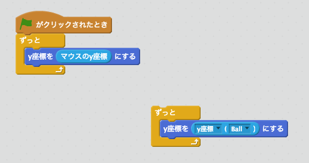
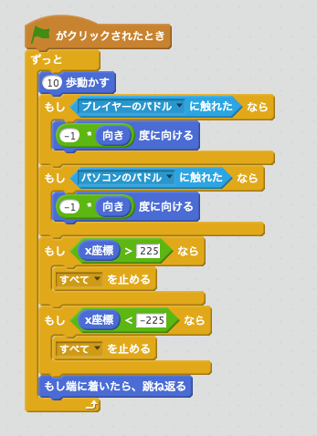
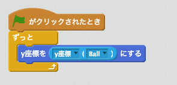
13. プログラムを単純化しよう
次は、パソコンのプログラムを改善したけど、その前に、ボールのプログラムを読みやすくしよう。
やりたいこと：ボールのプログラムが複雑になっているので、読みやすくしたい
やり方：
- 重複する部分をまとめる。その1：全てを止めるは２回書いているね
→ ２つの「もし◯◯なら」を１つにまとめるには、演算で「◯又は◯」を使おう
- 重複する部分をまとめる。その2：「(-1 * 向き)度に向ける」も２回出ている
→ ２つの「もし◯◯なら」を１つにまとめる
- 分かりにくい処理を別ブロックでまとめる
「(-1 * 向き)度に向ける」の意味は覚えている？
後で忘れてしまいそうだね。
忘れないように名前をつけよう：
- その他から、「ブロックを作る」
- 「左右に跳ね返る」と言う名前にしよう → OK
- 「(-1 * 向き)度に向ける」を新しいブロックの中に動かす
- 新しいブロックを「もし…」の中側から呼び出す
プログラムは少し長くなったが、後々読みやすくなったはずだ。
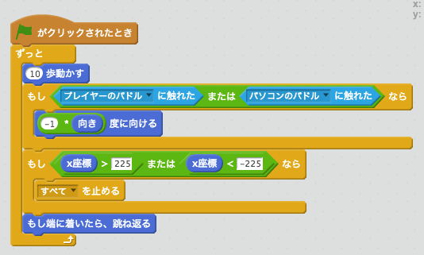
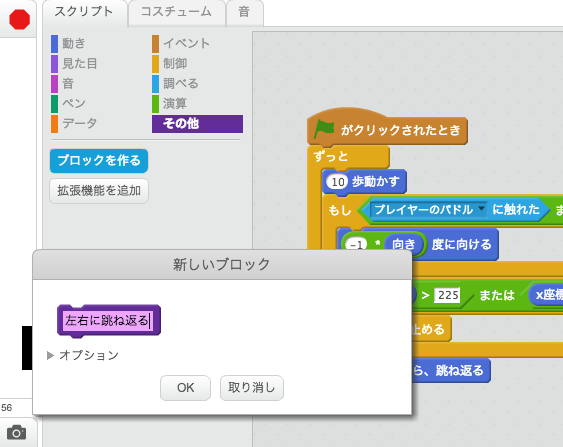
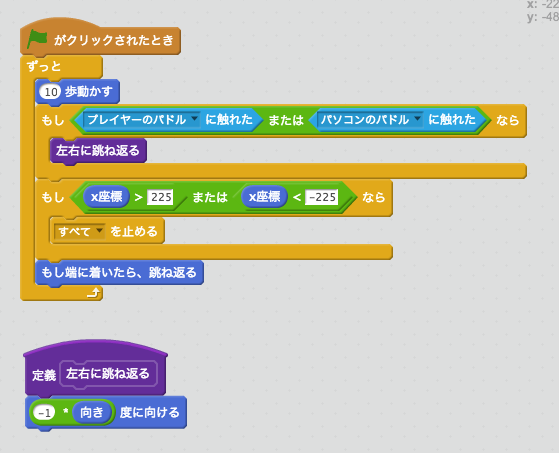
14. ボールがいつも真ん中からスタートするように
ゲームを始める前にいつもボールを動かすのは大変。
やりたいとこ：ゲームを始める時に、ボールを中央に置く。
やり方：
- ボールのプログラムの一番最初に、動きから「x座標を0、y座標を0にする」
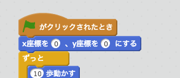
15. プレイヤーも勝てるようにする
これで遊んでみよう。
パソコンに勝てますか？ なかなか勝てないですね。 なぜ？
→ パソコンの動きがうますぎて、いつもボールに追従しているからだね。
やりたいとこ：パソコンのパドルの動きをパソコンでも負けるようにしたい
これはゲームのAIと言ってArtificial Intelligence、つまり人工知能だ。
ゲームの中で一番難しい部分だ。
やり方：
やり方は色々あります。アイディアを出そう。
これは１つのやり方。
パドルをいつもボールのy座標と一致させるとうますぎるので、パドルとボールのy座標の距離を縮めることにしよう。
- まず、データで「変数を作る」を選んで、「ボールまでの距離」と名付けよう
- 「ボールまでの距離を◯にする」を持ってくる
- 演算から「◯ - ◯」
- 調べるから「y座標 (Ball)」を左側に
- 動きから「y座標」を右に
- 動きから「y座標を◯ずつ変える」を下に入れる
- ◯をさっき計算した「ボールまでの距離」にしよう
どうなるの？ 前と同じですね。
パドルのy座標をボールまでの距離ずつ変えると、いつもぴったりボールの位置になるね
- 今度は、演算から「◯ / ◯」（割り算）を持ってきて「ボールまでの距離」を4で割ってみよう
つまり、毎回、ボールの位置までに動くよりも、途中まで、つまりボールの距離の４分の１まで動くようになる
つまり、パドルがいつも少し遅れる。
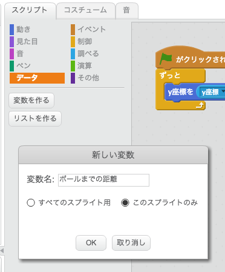
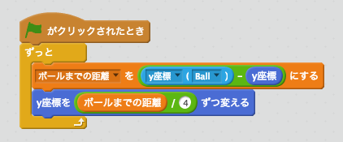
16. 勝った時と負けた時の背景を変える
やりたいこと：勝った時に「おめでとう！」、また負けた時に「残念！」の背景を表示したい
やり方：
- ステージの「背景」タブで背景１を複製する
- GAME OVERなどの文字を書く
- また背景１を複製し、YOU WIN! などを書く
- ボールのプログラムに戻って、スタート時に「背景１」にする
- まとめた条件をまた２つに別ける（まとめすぎちゃいました！）
- 勝った時にYOU WINの背景を表示する
- 負けた時にGAME OVERの背景を表示する
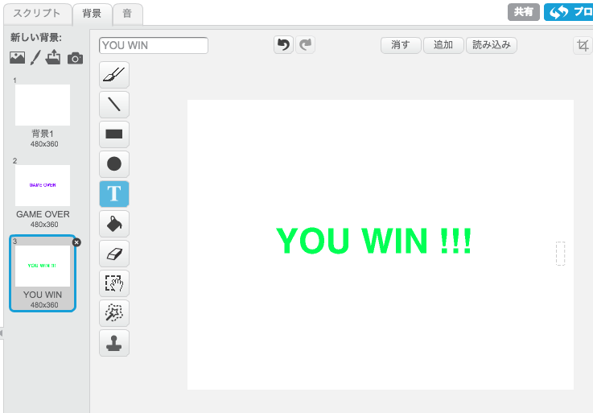
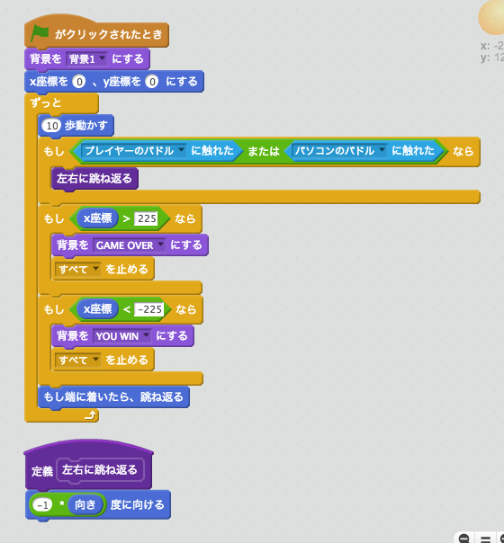
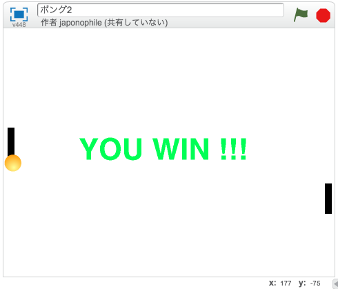